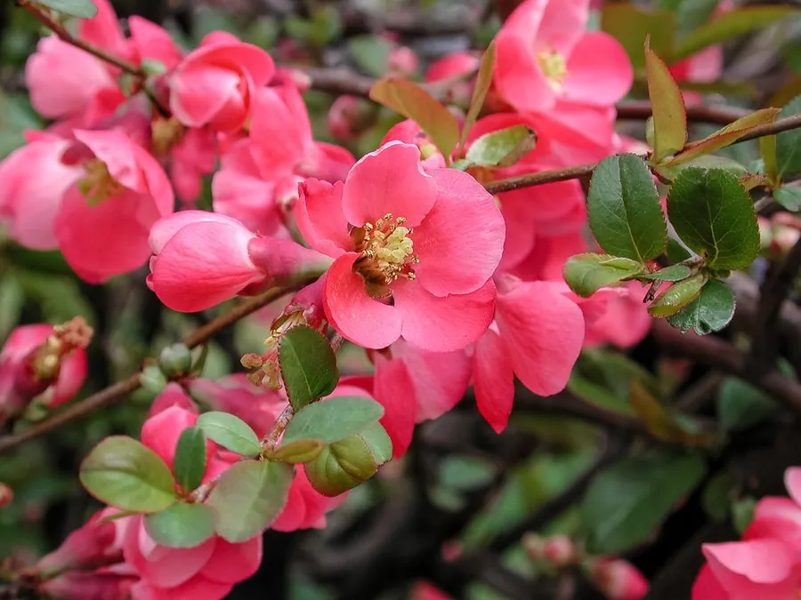

灌木与花木 · 植物界
贴梗海棠 Chaenomeles speciosa

中国常见的早春观花灌木，花朵紧贴枝干开放、红艳夺目，果实即中药“木瓜”，是庭院与盆景的传统花木。
- 分类
- 门被子植物门纲木兰纲目蔷薇目科蔷薇科属木瓜海棠属
- 栖息环境
- 海拔 2000 米以下的山坡、灌丛与庭院，喜光耐寒耐旱
- 地理分布
- 中国陕西、甘肃、四川、贵州、云南、广东等地，南北各地广泛栽培
- 保护级别
- 暂无评估；中国未列入国家重点保护野生植物名录
物种志
贴梗海棠为落叶灌木，高可达 2 m，枝条有刺；叶片卵形至椭圆形，边缘具尖锐锯齿，托叶肾形。花期 3–5 月，先花后叶或花叶同放，花 3–5 朵簇生于两年生枝上，花梗极短、几乎贴着枝干开放，故得名“贴梗海棠”；花冠红色、粉色或白色，花径 3–5 cm。果实为梨果，球形或卵球形，成熟时黄绿色，果皮皱缩，故又称“皱皮木瓜”。
贴梗海棠原产中国陕西、甘肃、四川、贵州、云南、广东等地，中国南北各地广泛栽培，喜光、耐寒、耐旱，适宜深厚肥沃、排水良好的土壤。早春开花、花艳似锦，是庭院、花境与盆景的优良树种；果实可入药，中药“木瓜”即其干燥果实，能舒筋活络、和胃化湿；果实还可加工果酱与果酒。贴梗海棠与海棠花、垂丝海棠同属蔷薇科，但贴梗海棠花梗极短、花朵紧贴枝干，是最容易辨认的一种。
形态与习性
- 株高可达 2 m，枝条有刺
- 花期3–5 月，先花后叶
- 果期9–10 月，梨果黄绿色、皱皮
- 光照喜光，不耐长期荫蔽
- 水分耐旱，怕积水
- 土壤深厚肥沃、排水良好的壤土
- 主要用途早春观赏与盆景、木瓜入药、果实加工果酱果酒
趣味知识
- 贴梗海棠的花梗极短，花朵几乎贴着枝干开放，因此得名。
- 贴梗海棠的果实皱缩，即中药“木瓜”，能舒筋活络、和胃化湿。
- 贴梗海棠是早春观花灌木，红花配绿叶，常用于庭院与盆景。
- 贴梗海棠与垂丝海棠同属蔷薇科，但前者花梗短、后者花梗细长下垂。